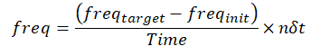

CLFreqScan
Description
This process slightly changes main RF frequency linearly for each sample point till a target frequency.

where 𝑛 denotes 𝑛𝑡ℎ sample point, and 𝛿𝑡 denotes sampling interval which is 25𝑛𝑠 herein.
Syntax
CLFreqScan( Targetfreq, Time )
It defines the target frequency.
It defines the time duration of this process.